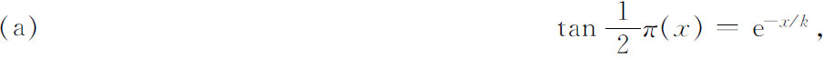
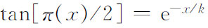

8．非欧几里得几何的重要意义
我们已经说过非欧几里得几何的诞生，是自希腊时代以来数学中一个重大的革新步骤。我们现在不讨论这个课题的全部重要意义。我们将沿着事物的历史发展过程叙述。这个创造的影响和它的意义的全面认识，都被推迟了，因为高斯没有发表他的研究工作，而罗巴切夫斯基和约翰·波尔约的工作约有30年之久为人所忽视。虽然这三人是知道他们工作的重要性的，但是数学家们一般表现不愿意接受激进的思想，加之19世纪30年代与40年代几何的关键主题是射影几何，因而非欧几里得几何的研究工作也就不吸引英、法、德等国的数学家们。当高斯关于非欧几里得几何的通信与注记在1855年他去世之后出版时，人们的注意力才引向这个课题。他的名字引起人们对非欧几里得几何思想的重视，不久罗巴切夫斯基和约翰·波尔约的工作被巴尔策（Richard Baltzer，1818—1887）写进了1866年至1867年的一本书中。嗣后的发展最终使得数学家们认识到非欧几里得几何的全部意义。
高斯确实看到非欧几里得几何的最富于变革性的含义。非欧几里得几何诞生的第一步就在于认识到，平行公理不能在其他九条公理的基础上证明。它是独立的命题，所以可以采取一个与之矛盾的公理并发展成为全新的几何，这是高斯和其他人做的。但是高斯已经认识到欧几里得几何并非必然是物质空间的几何，亦即并无必然的真理性，把几何和力学相提并论，并断言真理性的品质必须限于算术（及其在分析中的发展）。信任算术本身是奇怪的。算术此时根本尚无逻辑基础。确信算术代数与分析对物质世界提供真理性，那完全是根源于对经验的信赖。
非欧几里得几何的历史以惊人的形式说明数学家受其时代精神（而不是他们所作的推理）影响的程度是多么厉害。萨凯里曾经拒绝过非欧几里得几何的奇异定理，并且断定欧几里得几何是唯一正确的。但是在100年后，高斯、罗巴切夫斯基和约翰·波尔约满怀信心地接受了新几何，他们相信他们的几何在逻辑上是相容的，并且相信这个几何和欧几里得几何一样正确。但他们没有证明新几何的逻辑相容性。虽然他们证明过许多定理，而且并未得出显明的矛盾，但是或许能导出矛盾的可能性还是存在的。如果这一情况发生，他们的平行公理的假设便会不正确，于是正如同萨凯里所相信的一样，欧几里得的平行公理将是其他公理的推论。
约翰·波尔约和罗巴切夫斯基确实考虑到了相容性问题并且部分相信它，因为他们的三角学和虚半径球面上的三角学相同，而球面是欧几里得几何的一部分。但约翰·波尔约并不满足于这个论据，因为三角学本身并不是完整的数学系统。于是尽管缺少相容性的任何证明，或者是缺少新几何的可能应用性（这至少可作为使新几何能令人信服的论据），高斯、约翰·波尔约和罗巴切夫斯基接受了前人认为荒谬的东西。这种接受是一个信仰行动。非欧几里得几何相容性的问题在其后40年仍然悬而未决。
有关非欧几里得几何的创建还有一点值得注意与强调。有一种普遍信念认为高斯、约翰·波尔约和罗巴切夫斯基是钻了牛角尖，只是为了满足理智上的好奇心而玩弄改变平行公理的游戏，所以创建了新几何。但是因为这个创造已证明对科学异常重要——我们将要讨论的非欧几里得几何的一种形式已经用于相对论——许多数学家争论说，只凭纯粹理智上的好奇心，就可以作为探索任何数学思想的充分理由，并且那种探索也几乎同样肯定地会像非欧几里得几何那样对科学产生价值。但是非欧几里得几何的历史并不支持这种论点。我们已经看到非欧几里得几何的发生是在研究平行公理的几个世纪以后。对于这个公理的考虑是基于这样的事实，即它作为一个公理，应该是不证自明的真理，因为几何公理是我们关于物质空间的基本事实而且数学的和物理学的广大分支都使用欧几里得几何的性质，数学家都想确知它们依赖于真理。换言之，平行公理的问题不仅是真正的物理问题，而且是所能有的基本的物理问题。
参考书目
Bonola，Roberto：Non-Euclidean Geometry，Dover（reprint），1955．
Dunnington，G．W．：Carl Friedrich Gauss，Stechert-Ηafner，1960．
Engel，F．，and P．Staeckel：Die Theorie der Parallellinien von Euklid bis auf Gauss，2 vols．，B．G．Teubner，1895．
Engel，F．，and P．Staeckel：Urkunden zur Geschichte der nichteuklidischen Geometrie，B．G．Teubner，1899-1913，2 vols．The first volume contains the translation from Russian into German of Lobatchevsky's 1829-1830 and 1835-1837 papers．The second is on the work of the two Bolyais．
Enriques，F．：“Prinzipien der Geometrie，”Encyk．der Math．Wiss．，B．G．Teubner，1907-1910，III ABI，1-129．
Gauss，Carl F．：Werke，B．G．Teubner，1900 and 1903，Vol．8，157-268；Vol．9，297-458．
Heath，Thomas L．：Euclid's Elements，Dover（reprint），1956，Vol．1，pp．202-220．
Kagan，V．：Lobatchevsky and his Contribution to Science，Foreign Language Pub．House，Moscow，1957．
Lambert，J．H．：Opera Mathematica，2 vols．Orell Fussli，1946-1948．
Pasch，Moritz，and Max Dehn：Vorlesungen über neuere Geometrie，2nd ed．，Julius Springer，1926，pp．185-238．
Saccheri，Gerolamo：Euclides ab Omni Naevo Vindicatus，English trans．by G．B．Halsted in Amer．Math．Monthly，Vols．1-5，1894-1898；also Open Court Pub．Co．，1920，and Chelsea（reprint），1970．
Schmidt，Franz，and Paul Staeckel：Briefwechsel zwischen Carl Friedrich Gauss und Wolfgang Bolyai，B．G．Teubner，1899；Georg Olms（reprint），1970．
Smith，David E．：A Source Book in Mathematics，Dover（reprint），1959，Vol．2，pp．351-388．
Sommerville，D．M．Y．：The Elements of Non-Euclidean Geometry，Dover（reprint），1958．
Staeckel，P．：“Gauss als Geometer，”Nachrichten König．Ges．der Wiss．zu Gött．，1917，Beiheft，pp．25-142．Also in Gauss：Werke，X2．
von Walterhausen，W．Sartorius：Carl Friedrich Gauss，S．Hirzel，1856；Springer-Verlag（reprint），1965．
Zacharias，M．：“Elementargeometrie und elementare nicht-euklidische Geometrie in synthetischer Behandlung，”Encyk．der Math．Wiss．，B．G．Teubner，1914-1931，III AB9，859-1172．
————————————————————
(1) Principia，卷Ⅰ，定义8，Scholium。
(2) 例如，参看本章末文献中有关博诺拉（R．Bonola）的书。
(3) Opera，2，669-678．
(4) 第一版，1794年。
(5) Mém．de l'Acad．des Sci．，Paris，12，1833，367-410．
(6) Magazin für reine und angewandte Mathematik，1786，137-164，325-358．
(7) Hist．de l'Acad．de Berlin，24，1768，327-354，1770年出版＝Opera Mathematica，2，245-269。
(8) Werke，8，157-268，包含以上所说的与下面讨论的书信。
(9) Werke，8，177．
(10) Werke，4，258．
(11) Jour．für Math．，17，1837，295-320．
(12) 英文翻译见于博诺拉。参看本章末文献目录。
(13) 英文翻译见于博诺拉。参看本章末文献目录。
(14) Werke，8，220-221．
(15) 记号π（a）是标准的，所以用于此，实际上π（a）中的π与数π无关。
(16) 与长度关联的特定角概念来自兰伯特。
(17) 这是特殊公式；罗巴切夫斯基在1840年工作中给出的就是近代教科书中通常给出的形式，高斯也有这形式，即

其中k是一常数，叫做空间常数。对于理论目的，k的值是无关重要的。约翰·波尔约也给出过（a）式。
(18) 就关系

来说，选择x值，比如说对应于40°24′的x值，就能确定k。(19) 然而可参看霍尔斯特德（George Bruce Halsted），Amer．Math．Monthly，6，1899，166-172与7，1900，247-252。